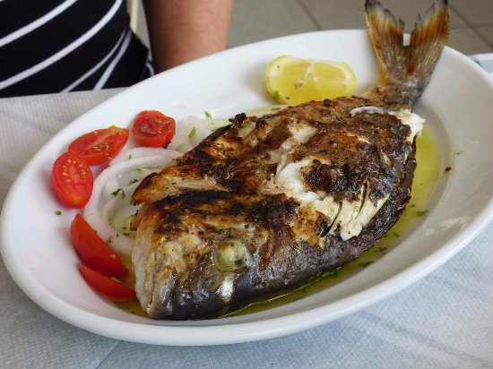

Le picot frit
Le picot à l'ancienne

Ingrédients
- 2 kg de picot (de préférence)
- 5 Gousses d'ail (environ 35g)
- 2-3 piments antillais
- 3 citrons jaunes
- 35 g de sel
- 300 ml d'eau
- Huile pour friture
- Farine de blé ou de manioc
- Poivre
Préparation
- Préparez la saumure dans un saladier ou une bassine. Verser les 300 ml d'eau et ajouter les 35 g de sel.
- Pressez l'ail, les citrons et couper les piments. Verser le tout dans la saumure.
- Coupez le poisson si nécessaire, disposez les dans la saumure soigneusement préparer. Puis laisser tremper pendant 1h30 en les retournant tout les 45 minutes.
- Une fois les poissons fini de repauser dans la saumure, essuyez les et mettez à chauffer l'huile.
- Retirez soigneusement l'ail des poissons et passez-les dans la farine.
- Désposez-les délicatement dans l'huil chaude.
- Attendre environ 5 minutes, vérifiez la coloration du poisson et retournez-le des que ce dernier est doré. Et faites de même pour le deuxieme côté.
- Sortez le poisson de la poêle et déposer-le sur un papier absorbant.
- Et pour finir dégustez le avec un peu de riz et de la sauce magie.